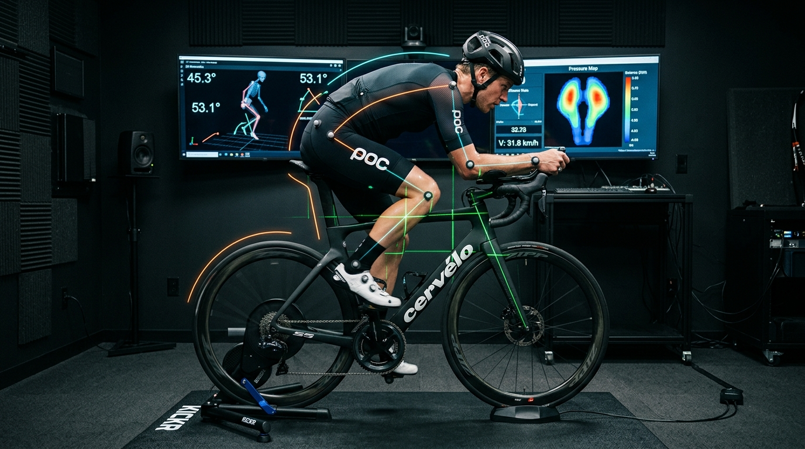
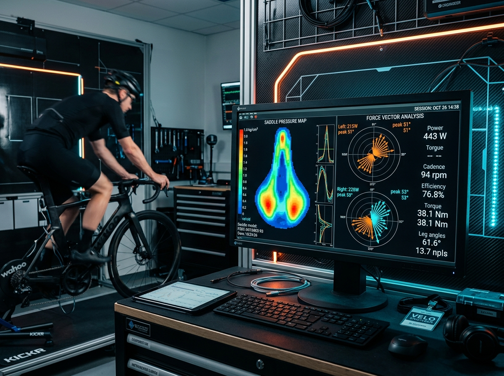

Engineered For Watts. Tailored For Anatomy.
Eliminate joint friction, optimize aerodynamic drag (CdA), and unlock sustained threshold power with millimetric 3D motion-capture and real-time saddle pressure matrix mapping.

Why Fitting Matters: The Physics of Human Output
A poorly aligned bicycle costs up to 35 watts in muscular stabilization and produces chronic patellar, lumbar, and cervical strain. Our studio replaces guesswork with high-frequency dynamic sensor telemetry.

GebioMized Saddle & Foot Pressure Matrix
64-point tactile sensor arrays reveal pelvic tilt, asymmetric soft-tissue compression, and peak force hotspots under the metatarsal heads at 200Hz.
STT 3D Infrared Kinematic Tracking
Active infrared reflective markers track hip lateral displacement, knee flexion/extension, ankle dorsiflexion, and spinal reach in continuous live 3D space.
Dual Laser Skeletal Alignment Calibration
Precision cross-hair green lasers align tibial tuberosity over the pedal spindle axis, ensuring zero knee adduction/abduction drift under maximum load.
Precision Biomechanical Services
All appointments are conducted by IBFI Level 4 certified biomechanists using synchronized video, pressure arrays, and laser jigs.
Dynamic 3D Bike Fit
Comprehensive whole-body kinematic optimization for Road, Gravel, Time-Trial, or Triathlon. Resolves saddle pain, hand numbness, and power leaks.
View ProtocolGait & Cleat Kinematics
Sub-millimeter shoe cleat alignment, varus/valgus canting shims, and thermo-molded custom carbon orthotics engineered for maximum kinetic transfer.
View ProtocolAero & Metabolic Testing
Wind tunnel and virtual drag (CdA) optimization combined with continuous VO2 respiratory analysis to discover your lowest aerodynamic resistance profile.
View ProtocolThe 5-Stage Biomechanical Protocol
Every millimeter is measured against your structural anatomy, mobility spectrum, and competitive athletic goals.
Physical Screen
Hamstring elasticity, pelvic tilt, leg length discrepancies, spinal curvature, and foot arch stability assessed on clinical plinth.
Sensor Calibration
3D active markers placed on 16 anatomical landmarks. Your bicycle is laser-leveled and secured into the Wahoo Direct-Drive rig.
Dynamic Motion
Live kinematic capture during target power intervals. High-speed 240fps multi-angle cameras record real-time joint angular velocity.
Micro-Adjustment
Iterative millimetric alterations to saddle height, fore/aft, tilt, handlebar reach/drop, shifter angle, and pedal cleat stance.
CAD Report
Full digital diagnostic archive exported to your Rider Portal: exact coordinate coordinates (X/Y), pressure heatmaps, and frame geometry.
Verified Athlete Transformation
Adjust the interactive optimization slider to see typical clinical data shifts achieved through our 3D fitting protocol.